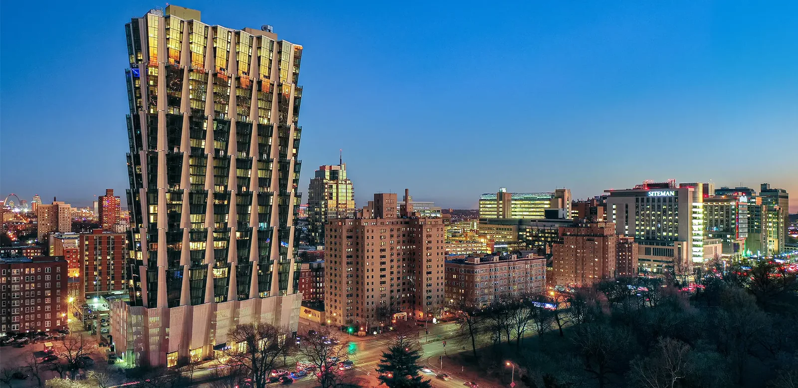
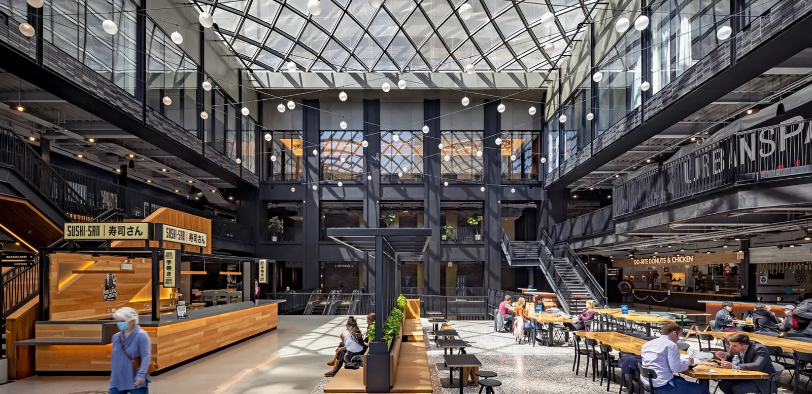
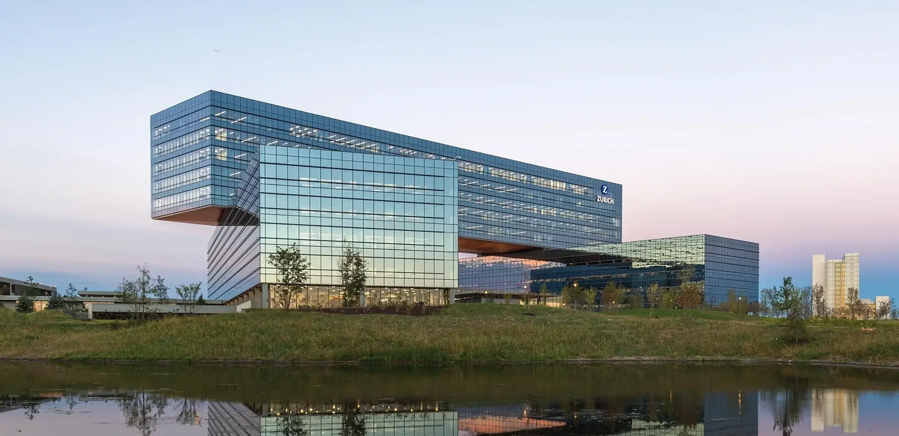
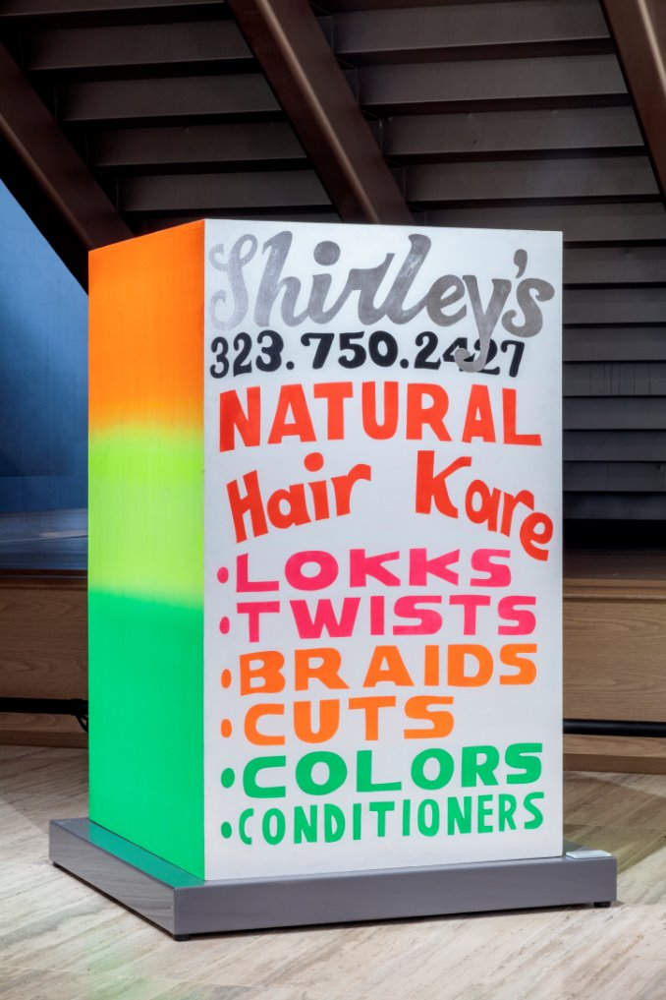
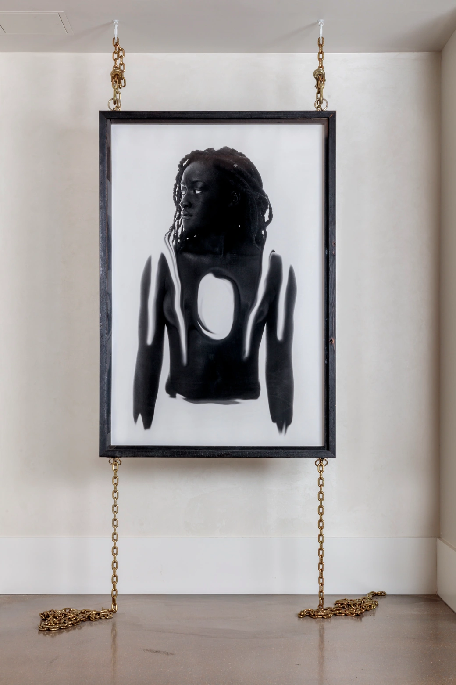

CLAYCO / AN EXHIBITION INVITATION
40+ years of building.



How vision takes form.
An invitation to imagine the art and science of building.
What if 1,284 buildings could become one living portrait of how we shape the world?
Across four decades, Clayco, the country’s premier design/build company, and its work have touched skylines, neighborhoods, workplaces, and lives. Gathered together, these structures become more than a record of growth. They reveal the choices, relationships, and human ambition behind the places we inhabit, beyond these walls.
One possibility is a sculptural landscape of buildings, brought to life through sound, moving image, and motion. The form of the exhibition remains an invitation to imagine together.
To build is to shelter and connect but also to divide and transform the land. Viewers are offered an immersive encounter with the beauty, possibility, tension, and consequence of building.
Why do we build? To turn hope into places people can share.
For Clayco founder Bob Clark, building has never been only about what rises from the ground, though he has always loved concrete and cranes. It is a way to translate family, community, curiosity, and optimism into places that endure.
This retrospective will ask audiences to see 1,284 buildings through that same lens: not simply as an archive of what was built, but as evidence of why we build—to create belonging, meaning, and possibility—while also exploring the impact of that ambition.
We invite you to be our partner in transforming this extraordinary archive into an experience that helps audiences see the built environment anew—and imagine what we might build together next.
SEMINAL PROJECTS / 01 / LIFE AND COMMUNITY
Places to gather, learn and belong.
A starting selection for the artist. Explore a project to discover its story.
SEMINAL PROJECTS / 02 / WORK AND CONNECTION
Places that bring us together.
A starting selection for the artist. Explore a project to discover its story.
SEMINAL PROJECTS / 03 / CARE AND DISCOVERY
Places that expand what is possible.
A starting selection for the artist. Explore a project to discover its story.
SEMINAL PROJECTS / 04 / MAKING WHAT COMES NEXT
Places that move the world forward.
A starting selection for the artist. Explore a project to discover its story.
ELLEN S. CLARK HOPE PLAZA
Making hope tangible.
A collaboration with Maya Lin gave renewal, reflection, and hope a physical presence at Washington University’s medical campus in St. Louis.
Robert G. and Ellen Clark helped make the plaza possible and worked with its designers. Maya Lin’s Uplift invites visitors into a quiet refuge in honor of Ellen. The plaza opened in 2010.
01 / 04
A place of calm within the medical campus.
Maya Lin · Uplift, 2010
Landscape: Michael Van Valkenburgh Associates
Lighting: Tillett Lighting Design Associates
Photographs from the supplied exhibition brief.
ART AS A PART OF LIFE
THE CLARKCOLLECTION.
200+ works. A world of perspectives.
THE COLLECTION / IN OUR SPACES
Art, part of everyday life.
Move across the images to explore. Click an open photo to view in full.


POTENTIAL OPPORTUNITIES / RUSSELL BURNS BUILDING
One possible setting.
Three existing spaces at RBB offer different ways to bring buildings, models, and stories into view.
These earlier concept studies open a conversation about scale and experience. The exhibition’s design and location remain open.
Potential opportunities only · source-based schematic · no exhibition venue selected
POTENTIAL OPPORTUNITY 01 / EXPERIENCE ROOM
A place toencounter the work.
A model table could gather people around the work. A glass floor offers another way to encounter the archive’s scale.
Illustrative spatial study
Drag to explore · scroll to zoom
Concept study for discussion · exhibition design and venue remain open
POTENTIAL OPPORTUNITY 02 / PRE-FUNCTION GALLERY
A reason topause and explore.
Shelves and a model table could turn a passage into a place for closer looking, while keeping its connections in view.

Illustrative spatial study
Drag to explore · scroll to zoom
Concept study for discussion · exhibition design and venue remain open
POTENTIAL OPPORTUNITY 03 / TIMELINE CORRIDOR
An invitation tofollow the story.
Physical models and a digital surface could connect individual buildings to a larger story along the existing corridor.
Illustrative spatial study
Drag to explore · scroll to zoom
Concept study for discussion · exhibition design and venue remain open
THE CONVERSATION STARTS HERE
What might we imagine together?
An extraordinary archive. An exhibition still to be imagined.
How might the buildings reveal the people, ideas, and consequences behind them?
What could sound, moving image, models, or other forms make us feel and understand?
The exhibition’s form and location remain open. Space requirements are being developed to begin the conversation.
Clayco / An invitation to collaborate